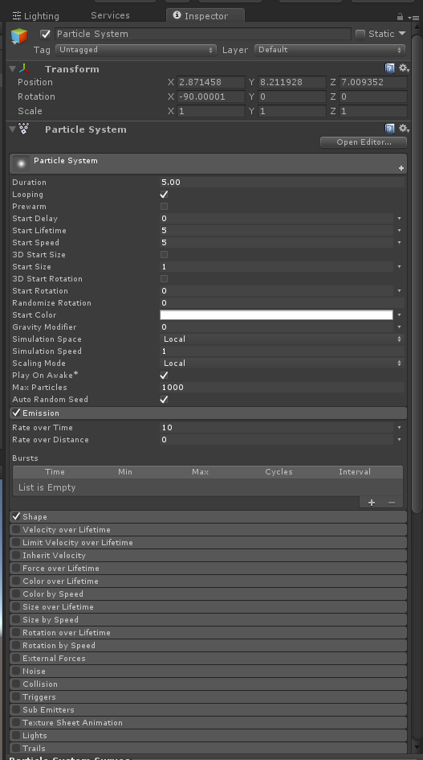

The most commonly used technique to create a visual effect is a particle system. A particle system is essentially a way to mass manipulate tiny objects (particles) that together form a nice visual. Each particle is given a material, which can be a custom texture. Visual artists also combine multiple particle systems for a single effect. For example, smoke in an explosion is a separate particle system.

Particle system component
Example
Let's make it snow! Since snow is one of the easiest and most intuitive effects to create, we will start with this.
In a step by step solution:
Create a new particle system (right click in Hierarchy -> Particle System)
Set the Transform rotation of your object to 0,0,0. By default particle systems are rotated.
Set lifetime to 10. This will make the snow "curtain" longer, since particles will live longer.
Set start speed to 0. We don't want our snow particles to have initial speed.
Set start size to random between two constants (0.1 and 0.5). This will make the particles have some variety.
Set gravity modifier to 0.05. This will make the particles fall slowly.
Under Shape, set Shape to Box (10, 0.1,10). This controls where the particles spawn.
Under Emission, set Rate Over Time to 50. Snow will now be more dense.
To improve the look and feel of this effect, we can also make our particles gradually fade out instead of disappearing, and change their texture to snow flakes! You can do this via Color over Lifetime and Renderer.
Post processing effects
Many of the impressive elements on AAA games or high quality render films come from post processing effects (or post-render effects). While those can be extremely expensive and very difficult to tweak based on your project, Unity offers some basic ones in the standard assets like Lens Flare.
Lens Flare component
Better ones can be found by Unity on the asset store.
It is a known weekness of Unity that their post-processing built-in effects are not great, but they are constantly improving them on each release. Other effects can be custom made by using shaders that build on top of the camera view. There are also packages in the asset store from professionals that offer high-quality effects at an affordable price.
Other Techniques
A number of techniques can be deployed to create a nice visual effect.
Just like coding, there are patterns, but it is really up to the developer to choose how they will implement it.
Common used techniques are:
Shaders: Animated shaders can already be enough for certain effects. While they can be very impressive, they are also very difficult to make.
Lighting: What's lightning without a flash?
Animations: Animations can be an easy way to control the position and rotation of objects during an effect.
Sprites: Using sprites (animated or not) instead of particles allows for more complicated effects.
Scripts: Scripts can control the timing of the different components of an effect. They can also make it easier to create dynamic effects based on the game context.
Camera positioning: Shaking the camera during a powerful visual will instantly improve the quality of that visual a lot. Another option is viewing an effect under a certain angle, or panning while the effect plays.
Sound: No matter how impressive a visual effect might look, it requires a matching sound effect to go with it. Sound is very often unappreciated by developers.
Deploying a combination of those techniques in a nice compilation will make for a nice, professional visual effect.